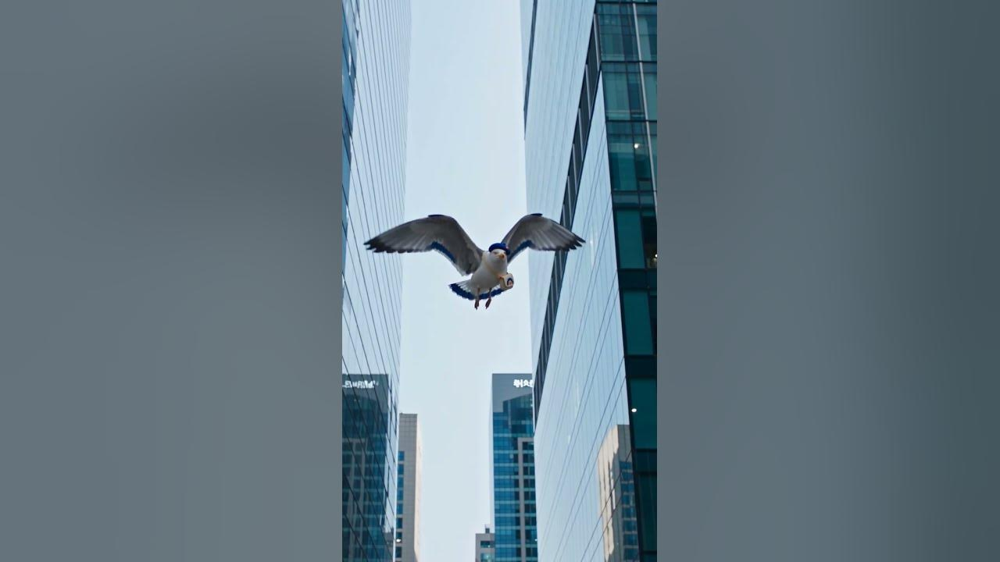
sns
brand: ARTOUR_BUSAN
networks: 5
status: online
LOCAL ART TRAVEL CHANNEL
아르투어부산
부산의 풍경과 일상을 예술의 시선으로 만납니다. 미술관과 문화공간, 도시의 장면을 짧은 영상과 여행 기록으로 연결합니다.
- #부산예술
- #부산여행
- #문화공간
- #씨걸이
[01]
X@artour_busan
[02]
부산의 예술 장면과 새 소식을 빠르게 연결하는 실시간 피드.
YouTube아르투어부산
[03]
Shorts와 커뮤니티 기록으로 이어지는 부산 문화 탐색.
Instagram@artour_busan
[04]
릴스와 이미지로 빠르게 만나는 부산의 예술 여행.
Facebook아르투어부산
[05]
부산 문화 여행 콘텐츠와 채널 소식을 모아 보는 페이지.
Naver Blogartour_busan
장소의 맥락과 여행 정보를 오래 읽을 수 있는 아카이브.
latest_short.log2026-11-0630s · 5 channels
작전명 아르투어부산 · THE BERET
부산의 모든 예술이 사라졌다. 단 한 마리의 예술가가 움직인다. 레이저 경보를 피해 명화를 되찾는 씨걸이의 30초 액션 예고편입니다. 예술 여행 안내 캐릭터를 액션 장르로 확장한 AI 제작 브랜드 영상입니다.
release.log 업데이트 기록 6건 펼치기
SHORT FILMS / 19 WORKS
씨걸이의 부산, 30초의 다른 시선
예술 공간과 부산의 거리, 캐릭터의 변신을 담은 AI 숏폼 19편. 최신 공개 순으로 넘겨 보고, 각 채널에서 전체 영상을 감상하세요.
CARD NEWS / SERIES
한 장소를 여덟 장의 산책으로
커피 한 잔을 위해 들른 씨걸이가 실사형으로 진지해지며 머물 이유를 발견하는 구조로 장소를 소개합니다. 표지와 반전, 공간·전시·산책 정보, 추천 동선, 저장 유도까지 여덟 장으로 구성하고 같은 시리즈를 다섯 채널의 형식에 맞춰 게시했습니다.
[02] / 2026-11-03 · 8 CARDS
도모헌 · 여긴 정말, 들어가도 되는 곳?
옛 부산시장 관사가 시민의 문화공간이 된 남천동 도모헌. 카페 모모스에 들렀다가 소소풍라운지와 부산 제1호 생활정원 소소풍 정원까지 이어지는 산책을 담았습니다. 운영 정보는 2026년 11월 공식 홈페이지 기준입니다.
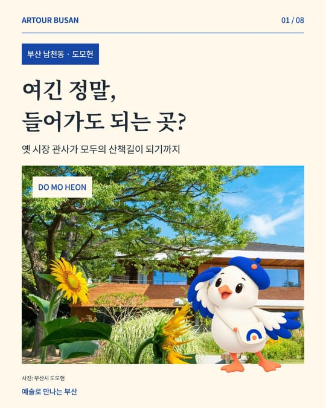
01 표지 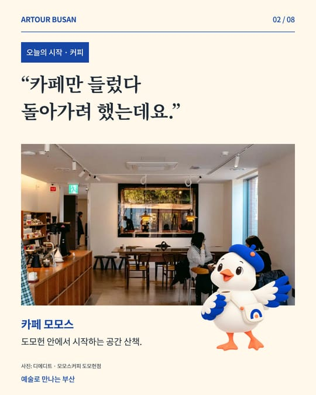
02 커피 03 반전 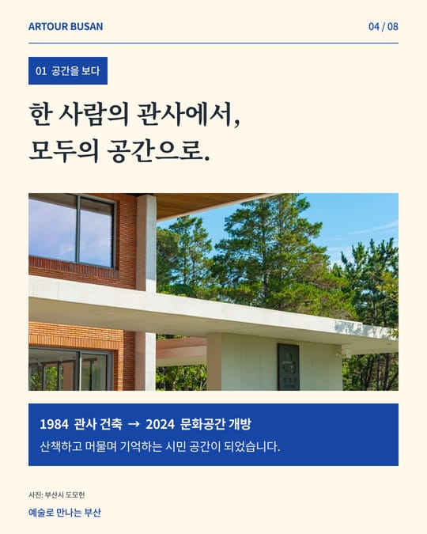
04 공간 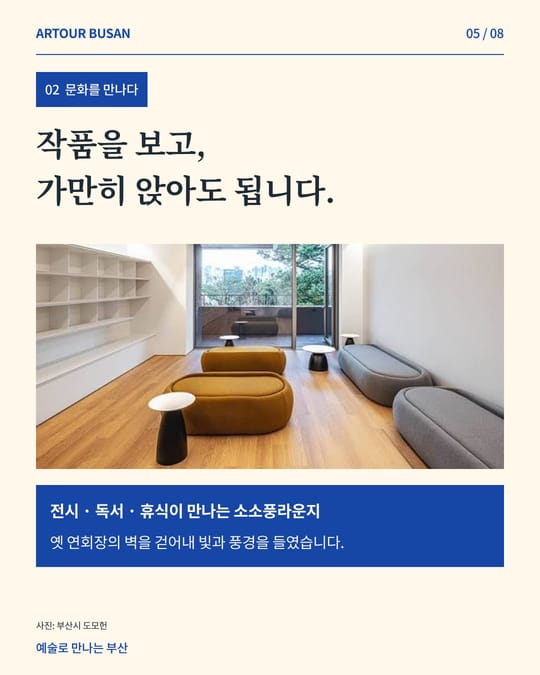
05 라운지 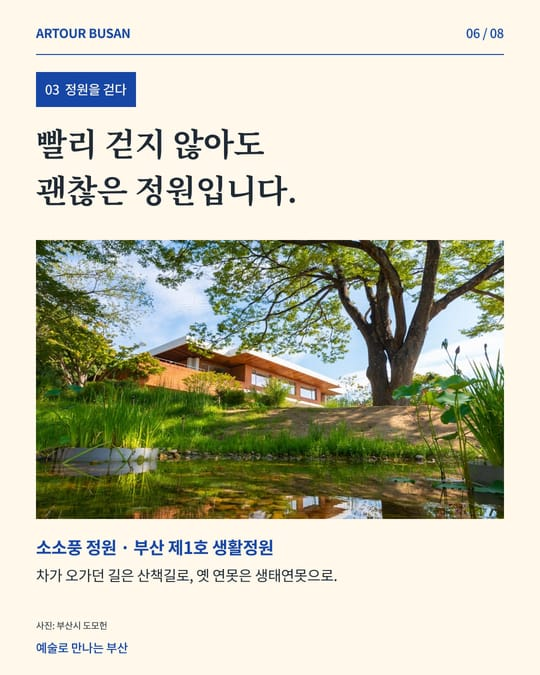
06 정원 07 동선 08 저장
[01] / 2026-10-22 · 8 CARDS
F1963 · 커피만 마시고 나오기엔 아까운 곳
옛 와이어 공장을 고친 망미동 F1963. 테라로사 수영점의 커피 한 잔에서 출발해 공장의 흔적이 남은 건축, 현대미술·디자인 전시, 예술도서관, 대나무 소리길로 이어지는 하루 코스를 소개합니다.
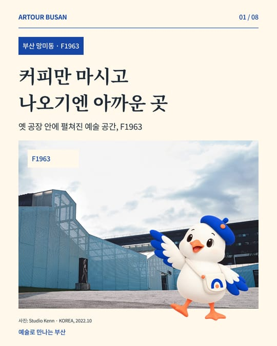
01 표지 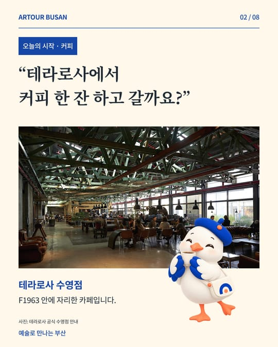
02 커피 03 반전 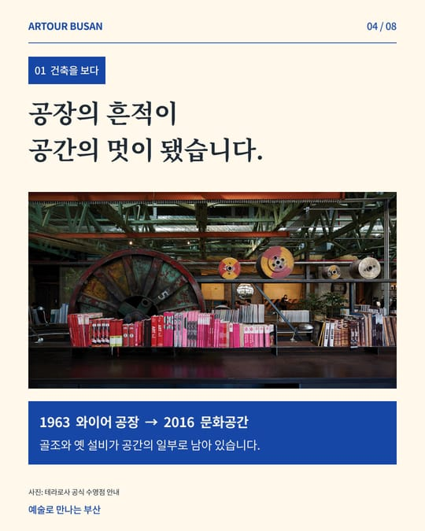
04 건축 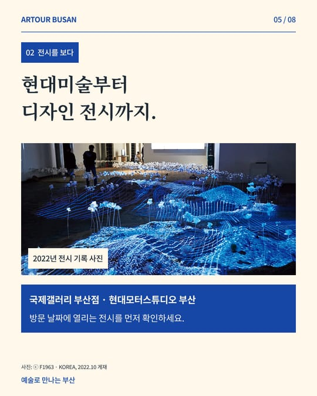
05 전시 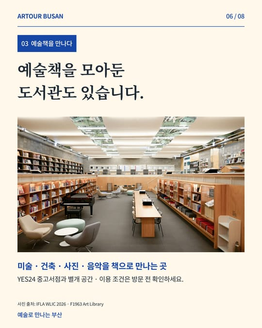
06 도서관 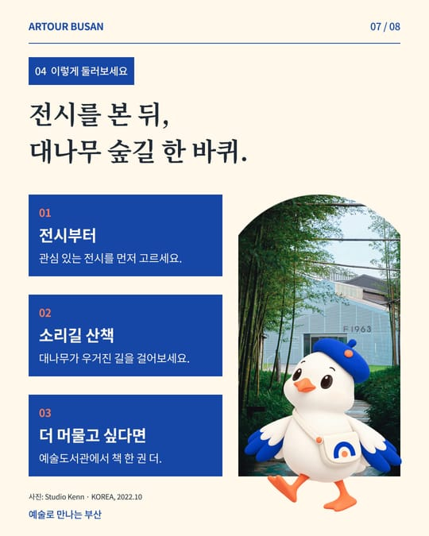
07 동선 08 저장
CHARACTER / SEAGULL
예술 여행을 함께하는 씨걸이
부산을 상징하는 갈매기에 예술가의 푸른 베레모와 여행자의 작은 가방을 더했습니다. 낯선 전시와 공간에도 가볍게 들어가 볼 수 있도록, 친근한 표정과 둥근 실루엣으로 다가가는 아르투어부산의 안내 캐릭터입니다.
부산의 갈매기, 예술 여행의 동행
- 푸른 베레모
- 바다의 색과 예술가의 이미지를 연결하는 시그니처입니다.
- 작은 크로스백
- 새로운 장소를 찾아 떠나는 여행자의 모습을 담았습니다.
- 둥근 형태와 표정
- 문화공간을 어렵지 않게 느끼도록 부드럽고 친근한 인상을 줍니다.
- 두 가지 표현
- 귀여운 기본형과 실제 갈매기의 질감을 살린 실사형이 같은 모자와 가방을 공유합니다.
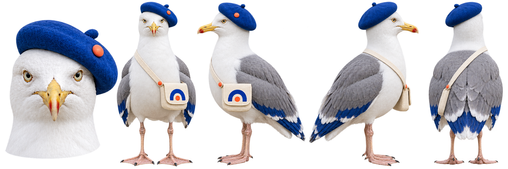
ORIGIN / ART × WELLNESS
아르투어부산의 초기 구상
부산의 예술 공간과 바다·숲·온천의 쉼을 연결하는 관광 경험에서 출발했습니다. 예술과 웰니스를 한 장에 정리한 초기 기획 인포그래픽으로, 도시를 바라보는 두 시선이 현재의 예술 여행 콘텐츠로 이어집니다.